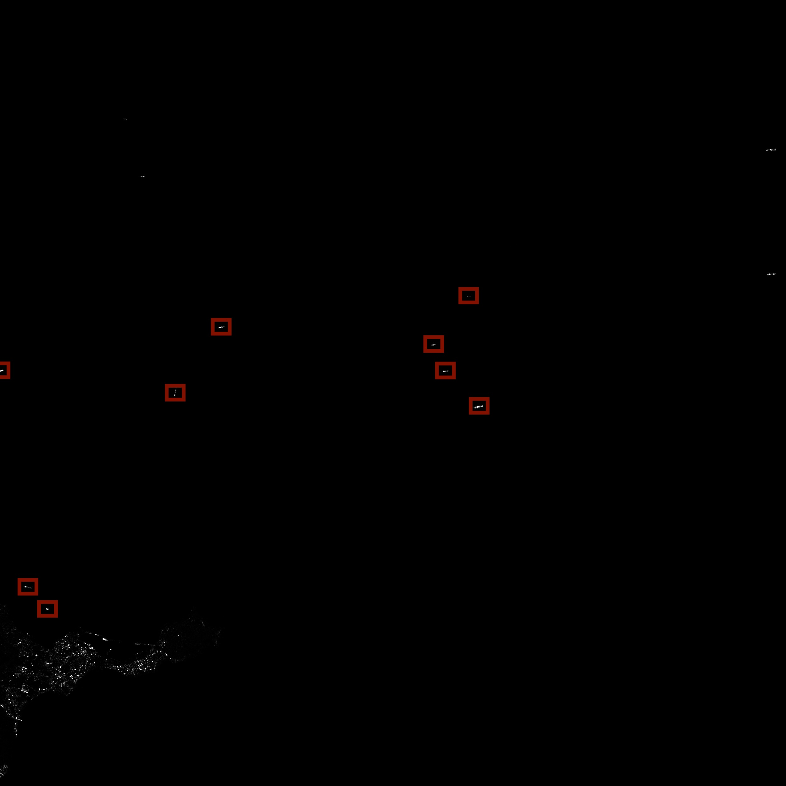

Leveraging Orbital Radar & Automatic Identification System (AIS) to isolate potential dark vessels in the Alboran Sea.
Scroll
The Chokepoint
The Alboran Sea serves as the primary maritime gateway connecting the Mediterranean to the Atlantic. Every day, thousands of vessels navigate these narrow corridors, representing billions in global trade.
Beneath the surface of legitimate commerce, a shadow economy operates. Illicit fishing fleets, unauthorized transshipments, and sanctioned vessels mask their movements by disabling their AIS transponders.
Scroll
Orbital Radar (SAR)
To detect the vessels involved in illegal activities, we rely on physical radar returns rather than voluntary electronic broadcasts.
ESA Sentinel-1 acquisitions (Oct 15–17, 2026) were tiled across the Alboran Sea. Active radar pierces cloud cover and total darkness, bouncing microwaves directly off metallic hulls to capture physical backscatter.
Scroll

Vessel Identification
The tiles were fed into a custom YOLOv8 neural network, specifically trained to identify ships in SAR imagery.
The neural network isolated high-intensity vessel signatures against the ocean background. Using the geographic metadata embedded inside the satellite imagery, the exact pixel locations of these detections were mathematically converted into real-world GPS coordinates.
Scroll
Data Fusion Overlay
Physical radar coordinates are mathematically cross-referenced against historical AIS telemetry from the Global Fishing Watch database.
Any physical target lacking an associated AIS broadcast within a 2.0 km radius is flagged as a potential dark vessel.
VERIFIED AIS MATCH
POTENTIAL DARK VESSEL
Scroll
RESULTS
ACQUISITION TIMEFRAME: OCT 15-17, 2026
116
SHIPS DETECTED
98
VERIFIED TELEMETRY
18
POTENTIAL DARK SHIPS
By integrating orbital radar (SAR) with open-source telemetry (AIS), this pipeline successfully strips the anonymity from unauthorized vessels, providing a scalable, automated solution for maritime domain awareness.
For the selected period of time, October 15–17, 2026, we identified 18 potential dark ships, which represents a 15.52% of the detected maritime traffic at this precise instant in time.
This high anomaly rate underscores the critical necessity for non-cooperative surveillance in strategic chokepoints. With this architecture active, disabling a transponder no longer guarantees invisibility.
MORE PROJECTS
To explore more projects across other domains visit my portfolio website, and my GitHub or LinkekdIn profiles.